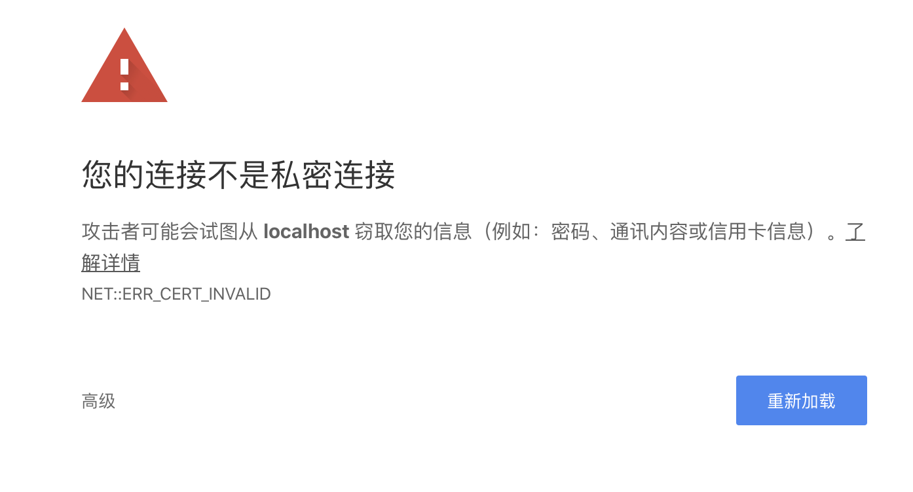
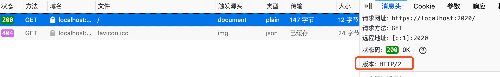

Echo 系列教程——定制篇6：自定义 Server 相关，替换或扩展默认的 Server
这是定制篇的最后一节，讲解 Server 的自定义。
默认 Server
通常情况下，Echo 通过如下方式启动一个 HTTP Server：
e := echo.New()
e.GET("/", func(c echo.Context) error {
return c.String(http.StatusOK, "Hello, World!")
})
e.Logger.Fatal(e.Start(":2020"))
我们打开源码一探究竟：
// Start starts an HTTP server.
func (e *Echo) Start(address string) error {
e.Server.Addr = address
return e.StartServer(e.Server)
}
原来调用的是 StartServer，参数是默认的 Server 实例，它是一个 http.Server 的指针类型。
自定义 Server
知道了 Echo#Start 最终调用的是 Echo#StartServer，而且它的参数是一个 *http.Server 类型，所以自定义一个 Server 很容易。我们先看看 http.Server 这个结构。
type Server struct {
// 指定 TCP 的监听地址，形式："host:port"。如果空，则使用 ":http"，即 80 端口
Addr string
// 当前服务器的 Handler，如果未设置，使用 http.DefaultServeMux
Handler Handler
// TLS 配置
TLSConfig *tls.Config
// 读取整个 request（包括 body）的最大允许时间（超时时间）
ReadTimeout time.Duration
// 从 Go1.8 开始增加。只是读取请求头的最大允许时间（超时时间）
ReadHeaderTimeout time.Duration // Go 1.8
// 和 ReadTimeout 对应，这是写 response 的最大允许时间（超时时间）
WriteTimeout time.Duration
// 从 Go1.8 开始增加。下个请求到来前允许的最大空闲时间（keep-alive 启用时）。
// 如果是 0，使用 ReadTimeout，都为 0 ，不会超时。
IdleTimeout time.Duration // Go 1.8
// 允许的最大请求头（单位字节），默认值 DefaultMaxHeaderBytes
MaxHeaderBytes int
// 其他字段忽略。。。
}
默认情况下启动的 Server，超时时间是 0，也就是不会超时。我们自定义一个 Server，设置超时时间：
s := &http.Server{
Addr: ":2020",
ReadTimeout: 10 * time.Second,
WriteTimeout: 10 * time.Second,
}
e.Logger.Fatal(e.StartServer(s))
为了方便验证，我们将超时时间设置的较短：10s，实际项目这个肯定太短了。
验证读超时是否生效
往下看之前，你想想用什么办法可以验证？
因为 HTTP 是基于 TCP 的，我们可以简单的通过建立 TCP 连接，然后等待一段时间后，再发送 HTTP 报文，具体代码如下：
func main() {
conn, err := net.Dial("tcp", "127.0.0.1:2020")
if err != nil {
panic(err)
}
time.Sleep(11 * time.Second)
fmt.Fprintf(conn, "GET / HTTP/1.0\r\n\r\n")
status, err := bufio.NewReader(conn).ReadString('\n')
fmt.Println(status, err)
}
通过修改 Sleep 的时间来控制等待时间，可以看看 10s 以内是否成功（刚好 10s 可能也会失败），10s 以上又是什么情况。
注意，这里的 HTTP/1.0 不能改为 1.1 等，否则得提供 Host 头部
Sleep 设置为 11s ，运行客户端后，如果返回 EOF，则表明超时设置生效了。
自定义 Listener
Echo 框架支持自定义 Listener，即通过 Echo#Listener 进行设置。例如：
l, err := net.Listen("tcp", ":1323")
if err != nil {
e.Logger.Fatal(l)
}
e.Listener = l
e.Logger.Fatal(e.Start(""))
什么场景下会需要自定义？或者说为什么 Echo 要让用户可以自定义 Listener？我认为有两种考虑：
-
Listener 支持配置，具体就是 net.ListenConfig 类型。实际上，net 包中，net.Listen() 函数就是用了这个类型获取 Listener 实例；
-
除了使用 net.Listen 获取一个 Listener 接口的实例外，还有其他的方式可以获取 Listener 接口的实例；
UnixListener
我们着重看看第 2 种情况。
net.Listener 是一个接口。在 net 库中，有 TCPListener 和 UnixListener，除此之外，其他的 Listener 都是基于这两种。比如 net.FileListener() 函数，最终是 TCPListener。
一般我们使用的就是 TCPListener，如果想在 echo 中使用 UnixListener，如何实现？（这个例子没有太多现实意义）
func main() {
unixAddr, err := net.ResolveUnixAddr("unix", "/tmp/echo.sock")
if err != nil {
panic(err)
}
unixListener, err := net.ListenUnix("unix", unixAddr)
if err != nil {
panic(err)
}
e := echo.New()
e.GET("/", func(ctx echo.Context) error {
return ctx.String(http.StatusOK, "Hello Unix！")
})
e.Listener = unixListener
e.Logger.Fatal(e.Start(""))
}
因为基于 Unix Domain Socket，所以，没法直接浏览器访问。写一个测试程序：
func main() {
unixAddr, err := net.ResolveUnixAddr("unix", "/tmp/echo.sock")
if err != nil {
panic(err)
}
conn, err := net.DialUnix("unix", nil, unixAddr)
if err != nil {
panic(err)
}
fmt.Fprintf(conn, "GET / HTTP/1.0\r\n\r\n")
body, err := ioutil.ReadAll(conn)
if err != nil {
panic(err)
}
defer conn.Close()
fmt.Println(string(body))
}
客户端能够输出：
HTTP/1.0 200 OK
Content-Type: text/plain; charset=UTF-8
Date: Wed, 25 Mar 2020 06:35:12 GMT
Content-Length: 13
Hello Unix！
表示成功！
再提醒下，一般不会定义 Listener，你知晓能定义即可。
TLS 相关
这里顺便介绍下 Echo 对 TLS 的支持。一般来说是用不到的，因为实际中，我们会使用 Web Server 进行反向代理，由 Web Server 来处理 TLS。但了解相关内容还是有利的。
HTTPS Server
看下相应的方法签名：
func (e *Echo) StartTLS(address string, certFile, keyFile interface{}) (err error)
相比 Echo#Start 方法，StartTLS 多了两个参数：certFile 和 keyFile。这两个参数是什么意思？这里简单介绍下，知晓什么意思即可。
- certFile：证书
- keyFile：私钥
net/http 包，这两个参数是字符串，代表两个文件的路径。Echo 对此进行了扩展，除了可以代表文件的路径，还可以是字节数组，表示证书和私钥的具体内容。
CA 证书可以购买，也可以申请免费的（阿里云、七牛云都有），也可以使用 let’s encrypt 免费证书。这里我们先自己生成证书，本地验证。（注意，自己生成的证书，浏览器是不认的）
证书生成
证书的生成可以用 Linux/Mac 的 OpenSSL 工具链。对于一个网站，首先必须有自己的私钥，私钥的生成方式为：
$ cd go-cache-example # 切换到我们的项目根目录
$ openssl genrsa -out server.key 2048
会在当前目录下生成一个 server.key 文件，这就是私钥。
利用私钥就可以生成证书了。OpenSSL 使用 x509 命令生成证书。这里需要区分两个概念：证书（certificate）和证书请求（certificate sign request）
- 证书是自签名或 CA 签名过的凭据，用来进行身份认证
- 证书请求是对签名的请求，需要使用私钥进行签名
x509 命令可以将证书和证书请求相互转换。
从私钥可以生成自签名证书：（跳过了证书请求，一步到位）
openssl req -new -x509 -key server.key -out server.crt -days 365
req 命令会通过命令行要求用户输入国家、地区、组织等信息，这些信息会附加在证书中展示给连接方。
You are about to be asked to enter information that will be incorporated
into your certificate request.
What you are about to enter is what is called a Distinguished Name or a DN.
There are quite a few fields but you can leave some blank
For some fields there will be a default value,
If you enter '.', the field will be left blank.
-----
Country Name (2 letter code) []:CN
State or Province Name (full name) []:Beijing
Locality Name (eg, city) []:Beijing
Organization Name (eg, company) []:studygolang
Organizational Unit Name (eg, section) []:
Common Name (eg, fully qualified host name) []:localhost
Email Address []:polaris@studygolang.com
以上命令会在当前目录生成 server.crt 文件。
这样我们有了上面需要的 cert 和 key。
验证本地的 HTTPS Server
在 go-cache-example 项目中的 cmd/custom/main.go 包含如下代码：
func main() {
e := echo.New()
e.GET("/", func(ctx echo.Context) error {
return ctx.String(http.StatusOK, "Hello TLS！")
})
e.Logger.Fatal(e.StartTLS(":2020", "server.crt", "server.key"))
}
启动服务：go run cmd/custom/main.go
____ __
/ __/___/ / ___
/ _// __/ _ \/ _ \
/___/\__/_//_/\___/ v4.1.15
High performance, minimalist Go web framework
https://echo.labstack.com
____________________________________O/_______
O\
⇨ https server started on [::]:2020
打开 Chrome 浏览器，请求：https://localhost:2020 （注意是 HTTPS），出现如下错误：

在浏览器输出：chrome://flags/#allow-insecure-localhost ，高亮的置为 Enabled，Reload Chrome。

再次请求 https://localhost:2020 ，能正常输出：Hello TLS！表明成功了。
通过 FireFox 浏览器，可以方便看到，我们这个服务支持 HTTP/2：

Echo 还支持自动 TLS，即：Echo#StartAutoTLS 方法，它从 https://letsencrypt.org 获取证书。这涉及到正式域名等，在此不演示！
自定义 HTTP/2 Cleartext Server
默认情况下，HTTP/2 是基于 TLS 的。上面也看到，当是 HTTPS Server 时，浏览器支持 HTTP/2，默认使用了它。如果我们想使用 HTTP/2，但是又不想使用 TLS，可以吗？这就是 H2C，即：HTTP/2 Cleartext Server。
从 Echo4.1.15 开始支持启动 H2C 服务器：
func (e *Echo) StartH2CServer(address string, h2s *http2.Server) (err error)
Go 从 1.6 开始，标准库 net/http 支持 HTTP/2，Go1.8 支持 HTTP/2 的 Push。Go 对 HTTP/2 的支持，最初通过 golang.org/x/net/http2 包实现。Echo 中，上面方法的参数 http2.Server 就是 golang.org/x/net/http2 包中的。
实现一个支持 H2C 的 HTTP Server：
func main() {
e := echo.New()
e.GET("/", func(ctx echo.Context) error {
fmt.Println(ctx.Request().Proto)
return ctx.String(http.StatusOK, "Hello HTTP/2！")
})
server := &http2.Server{
MaxConcurrentStreams: 250,
MaxReadFrameSize: 1048576,
IdleTimeout: 10 * time.Second,
}
e.Logger.Fatal(e.StartH2CServer(":2020", server))
}
然而，因为现代的浏览器都不支持 H2C，所以测试我们通过 curl 来进行。
$ curl -v --http2 -k http://localhost:2020
* Trying ::1...
* TCP_NODELAY set
* Connected to localhost (::1) port 2020 (#0)
> GET / HTTP/1.1
> Host: localhost:2020
> User-Agent: curl/7.64.1
> Accept: */*
> Connection: Upgrade, HTTP2-Settings
> Upgrade: h2c
> HTTP2-Settings: AAMAAABkAARAAAAAAAIAAAAA
>
< HTTP/1.1 101 Switching Protocols
< Connection: Upgrade
< Upgrade: h2c
* Received 101
* Using HTTP2, server supports multi-use
* Connection state changed (HTTP/2 confirmed)
* Copying HTTP/2 data in stream buffer to connection buffer after upgrade: len=0
* Connection state changed (MAX_CONCURRENT_STREAMS == 250)!
< HTTP/2 200
< content-type: text/plain; charset=UTF-8
< content-length: 15
< date: Thu, 26 Mar 2020 08:20:58 GMT
<
* Connection #0 to host localhost left intact
Hello HTTP/2！* Closing connection 0
而且服务端的输出也确实证明是 HTTP/2。
另外可以通过 Echo#DisableHTTP2 禁用 HTTP/2。
至此，关于 Server 的定制就介绍完了。Echo 的定制也全部讲解完。